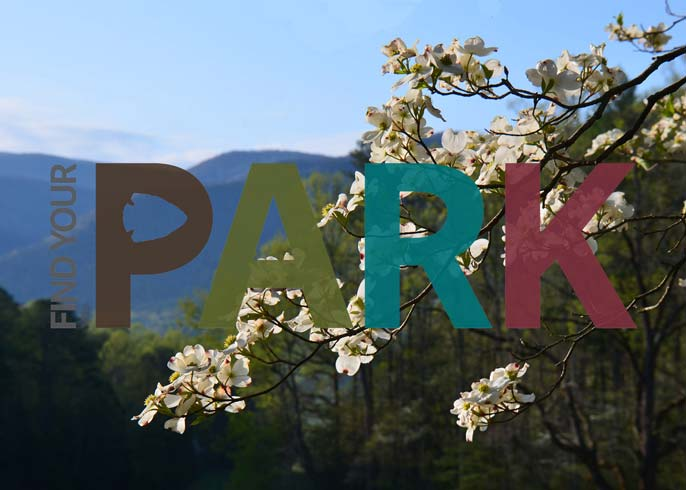

Featured Park
Great Smoky Mountains National Park
Ridge upon ridge of forest straddles the border between North Carolina and Tennessee in Great Smoky Mountains National Park. World renowned for its diversity of plant and animal life, the beauty of its ancient mountains, and the quality of its remnants of Southern Appalachian mountain culture, this is America's most visited National Park.
 learn more
learn more
Find Your Park
Find Your Park invites the public to see that a national park is more than just a place – it can be a feeling, a state of mind, or a sense of American pride. Beyond vast landscapes, the campaign highlights historical, urban, and cultural parks, as well as National Park Service programs that protect, preserve and share nature, culture, and history in communities nationwide. Further, Find Your Park encourages people to find their own personal connections within the network of national parks and public lands.
 learn moreLincoln Commemorations
Director of Ford's Theatre Society Paul R. Tetreault and Acting Superintendent of National Mall and Memorial Parks Karen Cucurullo announced the commemorative programming planned forFord's 150: Remembering the Lincoln Assassination, events marking 150 years since the assassination of Abraham Lincoln at Ford's Theatre on April 14, 1865.
learn moreHands–On Advice
Preservation Briefs provide in-depth information about various aspects of historic preservation. Many provide guidance on the appropriate treatment of traditional building materials such as slate roofing, plaster, and masonry. Others address architectural features including storefronts and porches, or focus on the reuse of specific building types such as historic gas stations and barns
 learn more
learn more
Find A Park
Support Your Parks
The National Park Foundation, in partnership with the National Park Service, enriches America’s national parks and programs through private support, safeguarding our heritage and inspiring generations of national park enthusiasts.
learn moreGet Your Entrance Pass
Get Your Entrance Pass: A pass is your ticket to more than 2,000 federal recreation sites. Each pass covers entrance fees at national parks and national wildlife refuges as well as standard amenity fees at national forests and grasslands, and at lands managed by the Bureau of Land Management and Bureau of Reclamation.
learn more